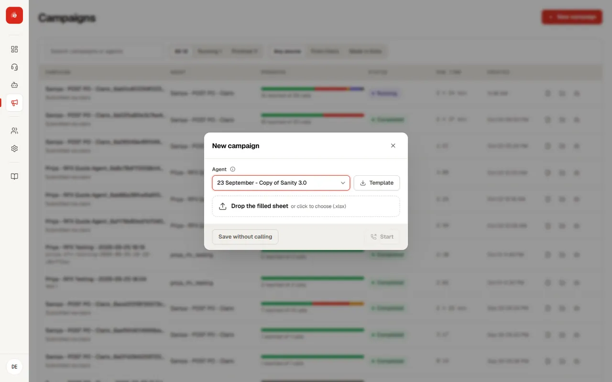
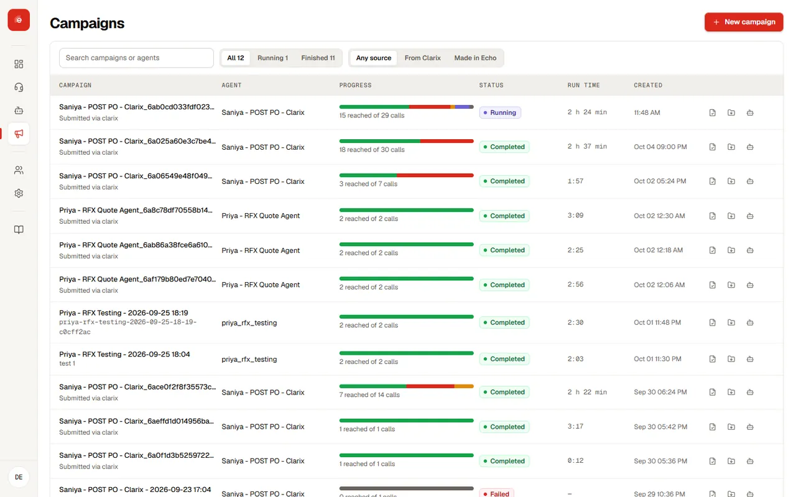
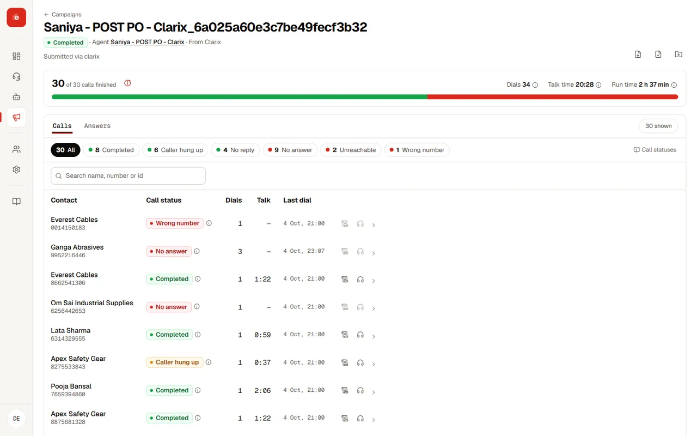

A campaign runs one agent against one list. Every call, outcome and recording stays tied to the campaign that produced it.
Create a campaign#


Go to Campaigns → New campaign.
- Agent: the agent to run. The campaign takes its voice and calling line from it.
- Campaign type: outbound (Echo calls the list) or inbound (Echo answers).
- Description: say which list this is, such as “Q3 open POs, chased once by email already”. Campaigns are named after the agent and the time, so this is where the run gets explained.
Before you create it, the form shows the input columns the list needs and the fields that will be captured per call. If the agent has no calling line yet, it tells you here.
Add the list#
Download the template, fill it and upload it. Echo proposes which column feeds which input and waits for you to confirm. See Upload and map contacts.
Start calling#
Confirming the mapping stores the list and starts dialling. There is no separate save step, so the mapping screen is your last check. If a list was stored but not dialled, Run campaign starts it, after a confirmation that shows how many real numbers will be called.
Rows with a problem, such as a missing required value, are stored as Input validation failed and are not called.
Statuses#
Every call status and campaign status, and exactly how Echo decides it, is on Call statuses.
| Campaign status | Meaning |
|---|---|
| Ready | The list is stored and ready to dial. |
| Running | Calls are going out. |
| Completed | Dialling has finished. |
| Failed | Dialling could not complete. The page says why. |
| Contact status | Meaning |
|---|---|
| Pending | Not called yet. |
| Dialled | Called, waiting for the result. |
| Captured | Outputs reported. |
| No answer | Ended without outputs. |
| Disconnected, partial | Dropped early; partial outputs kept. |
| Input validation failed | Not called; hover for the reason. |
Follow the results#

While it runs, the page refreshes on its own. See Results, recordings and exports for the contacts view, the responses table and every download.
Manage campaigns#
- The campaigns list shows each run’s agent, contacts, captured count, status and date.
- Delete removes the campaign, its list and every captured result. It asks first, and says how many results would be lost.